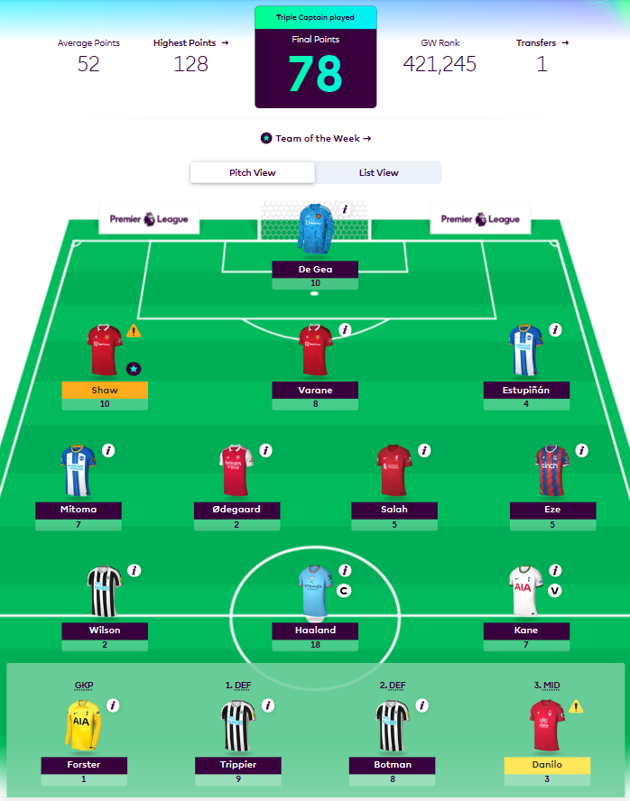

Monthly Winners
May
Not Jota Clue - Lloyd G
May
Lloyd
£15 Prize
It's not how you start, but how you finish... That's what she said
Not Jota Clue
| Overall Points | 2,432 |
| Overall Rank | 460,650 |
| Squad Value | £102.6m |
| League Position | 4th |
Month's Summary
Lloyd's season went on a late surge
finishing the the
final GW with 10 consecutive green arrows! Of the four GWs in our final month, Lloyd
tactically hodl'd
all three of his chips to the end of the season playing them in succession to progress
through the cup
and win not only the cup but also the month!
Not Jota Clue's best GW of the month came with a GW Rank of 421,245 making use of
his triple
captain. The chip only yielded an extra 6 points, however this was seemingly enough to get
the job done.
Winner's GW of the Month
April
Jo-Jogo bonito - Jojo Q
April
Jojo
£15 Prize
There's elite with a small e and Elite with a capital E... Suprise, surprise, the King is back!
Jojo SJ Quattrocchi
Jo-Jogo bonito
| Overall Points | 2,259 |
| Overall Rank | 284,983 |
| Squad Value | £103.5m |
| League Position | 2nd |
Month's Summary
April was an exceptionally long FPL month
including
a total of 6 GWs. Whilst it may have been close at the beginning Jojo proceeded to run away
with the cup
with a healthy 38 point margin!
GW29 started off strong with a bench boost
delivering an extra
35 points for Jojo's team. Being an early mover for Grealish paid dividends for Jo-Jogo
Bonito along
with a Free Hit in GW32 which gave him his best GW rank for the month. Jojo's impressive
month saw his
overall rank improve from 1,131,257 to 287,460!
Winner's GW of the Month

March
360 No-Pope - Matt C
March
Matt
£15 Prize
I am elite
Matt Cox
360 No-Pope
| Overall Points | 1715 |
| Overall Rank | 695,083 |
| Squad Value | £101.7m |
| League Position | 3rd |
Month's Summary
March was an intensely competitive month,
spanning
only three Gameweeks, and
ultimately decided by a narrow margin of just three points. In fact, a mere six points
separated first
place from fifth for the
entire month! Nonetheless, Matt managed to emerge as the victor for the second consecutive
month,
securing March's coveted
cash prize.
Matt's triumph can be attributed to his bold captaincy decision in GW28. Rather than playing
it safe, he
opted for a
differential choice and selected Saka to lead his team against Crystal Palace. The move paid
off in
spades, as Saka scored
two goals and provided an assist in Arsenal's dominant 4-1 victory.
Winner's GW of the Month

February
360 No-Pope - Matt C
February
Matt
£15 Prize
We are currently sending a reporter to the Coventry Building Society Arena to see if we can get a statement from Matt Cox about this victory
Matt Cox
360 No-Pope
| Overall Points | 1715 |
| Overall Rank | 695,083 |
| Squad Value | £101.7m |
| League Position | 3rd |
Month's Summary
February got off to an exceptionally
strong start for
Matt where
he achieved a whopping GW rank of 15,016. Thanks to great performances from his Man United
assets who
brought in
78 points alone for his team! With a little help from triple captaining Rashford for a 60
point
haul.
Another good week in GW24 solidified Matt's position as February's winner, achieving a GW
rank of
94,091. Again
being rewarded with another big haul for continued faith in Marcus Rashford against
struggling Leicester
City (30pts).
Winner's GW of the Month

January
Team Name - Oliver K
January
Oliver
£15 Prize
We failed to get a comment from the manager on winning this monthly prize as he said he was too busy looking at the next fixtures.
Oliver King
Team Name
| Overall Points | 1179 |
| Overall Rank | 2,367,316 |
| Squad Value | £103m |
| League Position | 15th |
Month's Summary
An exceptionally strong month from Oliver
saw him
climb in overall rank from 3,859,454 to 2,367,316 over the 3 GWs whilst achieving a GW Rank
of 38,931
(GW20). This was all in spite of being deducted 20pts for transfers!
The brave decision to captain Fernandes over Haaland during the DGW was heavily rewarded
thanks to his
38pt return! Whilst faith in Kepa and an early move for Mitoma were other strong factors in
strengthening his FPL team.
Winner's GW of the Month

December
Specialist InFailure - Shah S
December
Shahrukh
£15 Prize
One of the best jobs of my career was to finish top of the month in this league... I keep saying this because people don't know what is going on behind the scenes... If I speak I'm in trouble
Shahrukh Sheharyar
Specialist InFailure
| Overall Points | 1063 |
| Overall Rank | 1,112,490 |
| Squad Value | £101.9m |
| League Position | 5th |
Month's Summary
It has been a massively impressive month
for Shah
who climbs the Tinchy table, now currently level with 4th place. Shah wasted no time after
the World
Cup break and immediately played his bench boost which gained an extra 24 points and was
rewarded with
an incredible GW rank of 15,306!
It was a short December for FPL comprised of only 2 GWs. January has only 3 GWs to be taken
advantage
of, however the DGW for certain teams could make for a juicy month!
Winner's GW of the Month

November
It Is What It Ings - Amrit B
Unfortunately this website was created after this month's winner and so we do not have the information for this month's breakdown.
October
Lones Xi - James L
Unfortunately this website was created after this month's winner and so we do not have the information for this month's breakdown.
September
It Is What It Ings - Amrit B
Unfortunately this website was created after this month's winner and so we do not have the information for this month's breakdown.
August
Lešo Pirke - Mirko V
Unfortunately this website was created after this month's winner and so we do not have the information for this month's breakdown.